Poctivá strojařina, precizní CNC obrábění a zakázková kovovýroba
Již více než 30 let dodáváme spolehlivé kovoobrábění na 10 špičkových CNC strojích a vyrábíme samonosné pojezdové brány, ocelové ploty a konstrukce pro průmysl i náročné zákazníky po celé České republice.
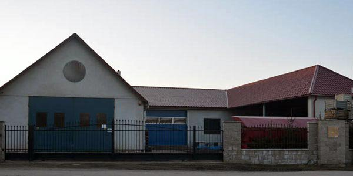
Tři dekády poctivého řemesla a neustálých technologických investic
Od skromné dílny v Blížkovicích až po moderní technologické zázemí se špičkovými CNC soustruhy a frézkami Doosan a HAAS.
Společnost byla založena v roce 1994 Liborem Marem jako fyzická osoba se zaměřením výroby na obrábění kovů a zakázkové zámečnictví. V roce 2012 se firma úspěšně transformovala na společnost s ručením omezeným Kovo In s.r.o.
Předmětem naší každodenní činnosti je malo i středně sériová strojírenská výroba, přesné CNC obrábění kovů a profesionální zhotovování ocelových plotů a samonosných pojezdových bran. Naše výrobní zázemí v Blížkovicích u Znojma disponuje stabilní základnou tvořenou 6 CNC soustruhy a 4 CNC frézami.
Díky moderním dvousoustružnickým centrům s protivřetenem a poháněnými nástroji zvládáme zhotovit i nejsložitější dílce na jedno jediné upnutí, což eliminuje chyby a garantuje bleskové dodací lhůty.
„Ve strojařině rozhoduje každá setina milimetru a dané slovo. Naše stroje pravidelně kalibrujeme a každý výrobek kontrolujeme podle přísné normy ISO 9001.“
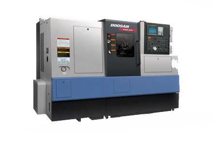
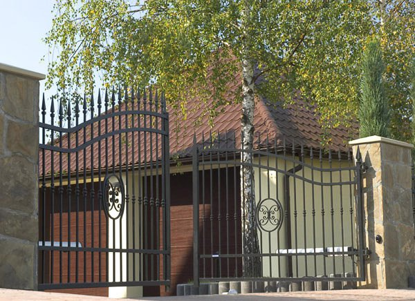
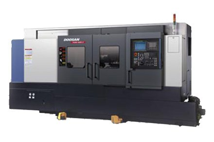
Cesta Kovo In: Od prvních soustruhů k modernímu CNC parku
Založení živnosti a první zámečnická výroba
Libor Mar zakládá kovoobráběcí a zámečnickou dílnu v Blížkovicích jako fyzická osoba. První zakázky pro zemědělské podniky a stavebníky v regionu Znojemska a Vysočiny.
Rozšíření výrobní haly a specializace na samonosné brány
Dílna se rozšiřuje o specializované pracoviště pro výrobu velkoformátových pojezdových samonosných bran, ocelových plotových dílců a bezpečnostních mříží.
Mezinárodní certifikace ISO 9001:2008
Zavedení přísného systému managementu jakosti dle mezinárodní normy ISO 9001:2008. Garance sledovatelnosti materiálu a standardizované výstupní kontroly.
Transformace na Kovo In s.r.o. a masivní nákup CNC
Přeměna na kapitálovou společnost s.r.o. a instalace vysoce přesných CNC soustruhů Doosan PUMA a frézovacích center HAAS VF-2SS s vysokými otáčkami.
Integrace dvousoustruhů PUMA MS s protivřetenem
Pořízení špičkových soustružnických center PUMA 240 MS a PUMA 2600 MS s protivřetenem a poháněnými rotačními nástroji pro obrábění dílců na jedno upnutí.
Současnost: Stabilní partner pro strojírenství i stavebnictví
Komplexní výrobní základna s 10 CNC obráběcími stroji, moderní zámečnickou dílnou a stovkami úspěšných realizací po celé republice.
Obrábění kovů i zakázková zámečnická kovovýroba
Poskytujeme ucelené technologické řešení pod jednou střechou – od přesného CNC dílce až po masivní ocelovou konstrukci.
Přesné CNC obrábění kovů
Soustružení a frézování konstrukčních, nástrojových i nerezových ocelí a neželezných kovů. Malé a střední série s mikrometrickou přesností.
- 6 CNC soustruhů včetně protivřeten a pohonů
- 4 vertikální CNC frézky (HAAS, MYNX, Challenger)
- Obrábění z tyčí, výkovků i svařenců
Zámečnictví a kovovýroba
Zakázková výroba stavebních a průmyslových ocelových prvků. Od zaměření na stavbě přes dílenské svařování až po povrchovou úpravu a montáž.
- Samonosné pojezdové i křídlové brány na míru
- Ocelové plotové dílce, tahokov a výplně
- Bezpečnostní mříže, schránky, zábradlí a svařence
Certifikovaná kvalita ISO 9001
Systém řízení jakosti prověřený nezávislými audity. Garantujeme 100% rozměrovou shodu, vystavení měřicích protokolů a materiálovou sledovatelnost.
- Certifikát systému managementu kvality dle ISO 9001:2008
- Pravidelně kalibrovaná digitální měřidla
- Vstupní, mezioperační a výstupní technická kontrola
Interaktivní katalog strojního parku a výrobků
Filtrujte podle kategorií nebo hledejte konkrétní technologii. Kliknutím na jakoukoliv kartu zobrazíte technické parametry.
CNC soustruh Doosan PUMA 240 M
Horizontální soustružnické centrum s poháněnými rotačními nástroji pro soustružení a frézování v ose C na jedno upnutí.
CNC soustruh Doosan PUMA 240 B
Tuhé produkční soustružnické centrum s velkým vrtáním vřetene 76 mm pro hospodárné obrábění tyčového materiálu a přírub.
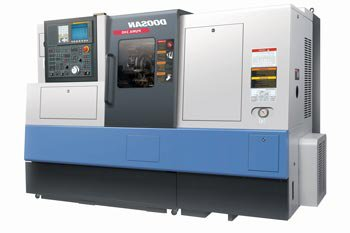
CNC soustruženíCNC soustruh Doosan PUMA 240 MS (protivřeteno)
Dvousoustružnický poloautomat s protivřetenem pro kompletní dokončení součásti z obou stran na jedno jediné upnutí.
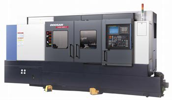
CNC soustruženíCNC soustruh Doosan PUMA 240 A
Rychlý a stabilní soustruh pro precizní dokončovací práce a přesné tolerované průměry s nízkou drsností povrchu.
CNC soustruh Doosan PUMA 2600 MS (protivřeteno)
Těžké velkoformátové centrum s výkonným motorem 22 kW a protivřetenem pro náročné úběry a velké hřídele.
CNC soustruh Doosan LYNX 220
Kompaktní a bleskurychlý soustruh pro sériovou výrobu menších přesných rotačních dílců s posuvy 30 m/min.
CNC vertikální frézka HAAS VF 2SS (I)
Super-rychlé vertikální obráběcí centrum americké výroby s otáčkami vřetene 12 000 ot/min a výměnou nástrojů za 1,8 s.
CNC vertikální frézka HAAS VF 2SS (II)
Druhé identické centrum zajišťující stoprocentní zastupitelnost, flexibilitu a vysokou výrobní kapacitu pro série.
CNC frézovací centrum Doosan MYNX 400
Těžké silové vertikální obráběcí centrum s masivními litinovými kluznými vedeními pro silové frézování ocelových desek.
CNC obráběcí centrum CHALLENGER 800
Velkorysé vertikální frézovací centrum s pojezdem 800 × 500 mm a nosností stolu 800 kg pro rozměrné konstrukční desky.
Samonosné vjezdové a pojezdové brány
Zakázková výroba samonosných ocelových bran s nosným C-profilem. Bezproblémový celoroční chod i při sněhu a námraze.
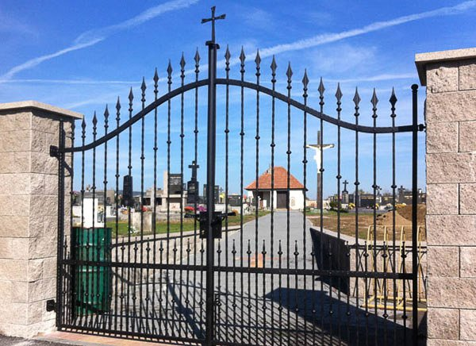
Brány a oploceníKřídlové vjezdové brány a vstupní branky
Jednokřídlé a dvoukřídlé brány s masivními seřiditelnými panty, kvalitním zámkem a designem sjednoceným s plotem.
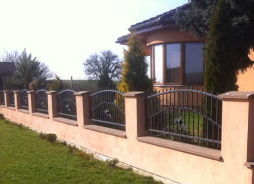
Brány a oploceníOcelové ploty a plotové dílce
Moderní i klasické plotové dílce s tahokovem, jekly či lamelami přesně na míru vašim stavebním sloupkům a podezdívkám.
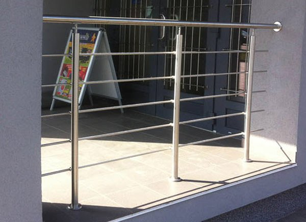
Zámečnictví a konstrukceZábradlí pro schodiště, balkony a terasy
Bezpečná ocelová i nerezová zábradlí pro privátní a průmyslové objekty splňující stavební normu ČSN 74 3305.
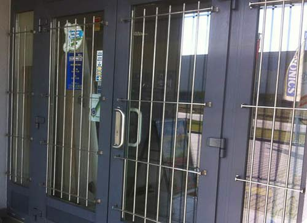
Zámečnictví a konstrukceBezpečnostní mříže na okna a světlíky
Masivní ocelové mříže pro ochranu provozoven, skladů i suterénních oken s bezpečnostním kotvením do zdiva.
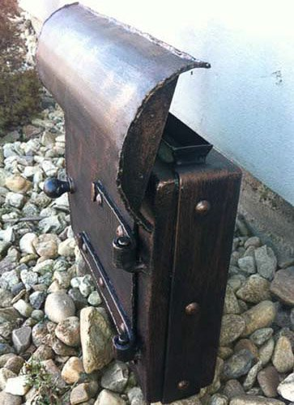
Zámečnictví a konstrukceZakázkové poštovní schránky a sloupky
Atypické schránky integrované do oplocení a vjezdových sloupků s možností oboustranného vhozu a přípravy pro zvonek.
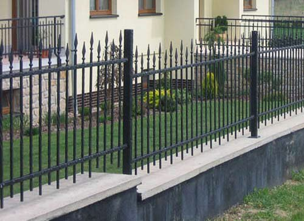
Zámečnictví a konstrukceKovovýroba a ocelové svařence
Zakázkové svařování ocelových konstrukcí a rámů strojů metodami MIG/MAG a TIG s následným přesným CNC obrobením.
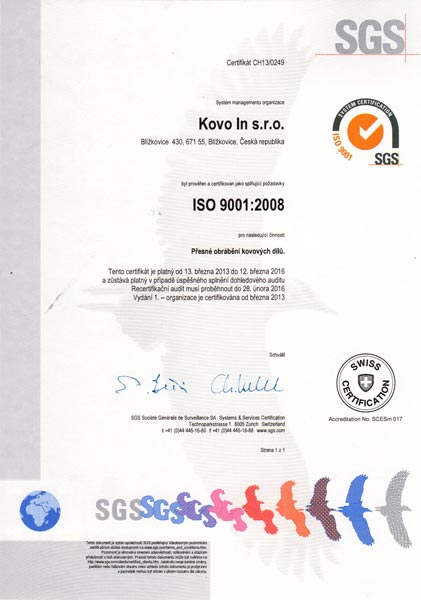
Kontrola jakostiSystém řízení jakosti dle ISO 9001
Certifikovaný systém kvality garantující stoprocentní rozměrovou kontrolu, kalibrovaná měřidla a vystavení protokolů.
Ukázky našich výrobků a dílenského zázemí
Prohlédněte si skutečné fotografie z naší výroby bran, plotů, zábradlí i práce na CNC strojích.
Certifikovaný systém managementu kvality dle ISO 9001
Kovo In s.r.o. je oficiálním držitelem certifikátu systému managementu kvality dle mezinárodní normy ČSN EN ISO 9001:2008 pro oblast kovoobrábění a zámečnictví.
Každou dodávku hutního materiálu ověřujeme atesty 3.1 dle EN 10204.
Obráběči kontinuálně kontrolují kritické kóty kalibrovanými digitálními měřidly.
Finální protokol o měření přikládáme k výrobní dávce na vyžádání zákazníka.
Zašlete nám výkres nebo specifikaci k posouzení
Obratem prověříme kapacitu na našich CNC strojích nebo zpracujeme návrh zámečnických prací.
Kovo In s.r.o.
Výrobní provozovna a sídlo společnosti v Blížkovicích u Znojma.
Fakturační a výrobní údaje
- Název: Kovo In s.r.o.
- Adresa: č.p. 430, 671 55 Blížkovice
- IČO: 29315107
- DIČ: CZ29315107
- Zápis: Krajský soud v Brně, oddíl C